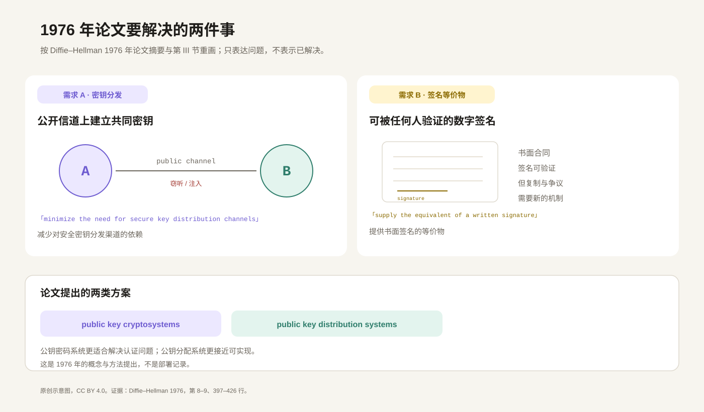
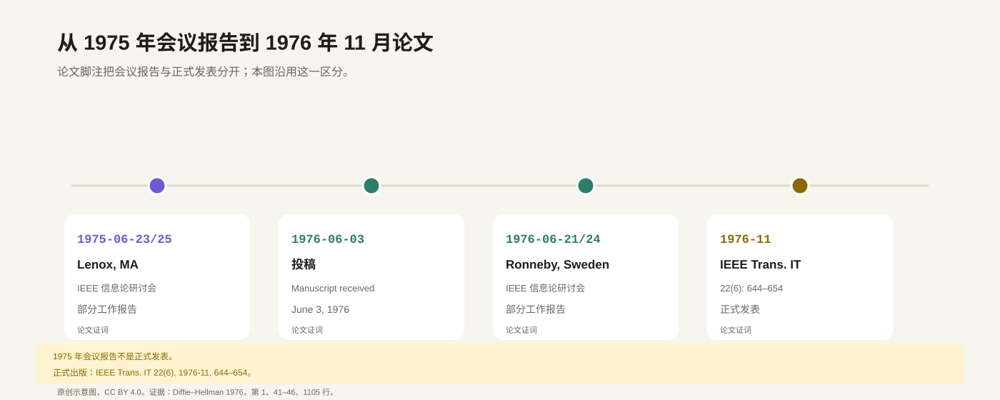
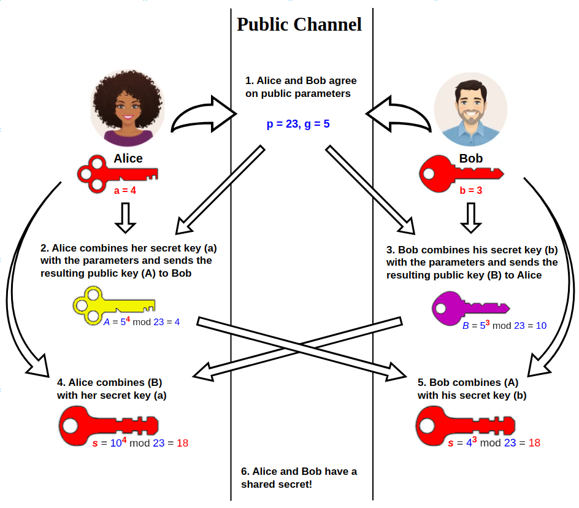

原理与机制
事件：公钥密码诞生（Birth of Public-Key Cryptography）。1976 年，Diffie 与 Hellman 在 IEEE Transactions on Information Theory 发表《New Directions in Cryptography》，提出公钥密码体制和公开密钥分配的概念。论文没有给出具体陷门函数，但确立了此后所有公钥协议的问题框架。

为什么重要
论文把动因写成两类需求：一方面要「minimize the need for secure key distribution channels」，另一方面要「supply the equivalent of a written signature」。正文进一步解释，n 个用户会产生「(n2 - n)/2 potential pairs」，无法假定每对用户都事先通过安全物理手段取得密钥。因此该条目只说明公钥方案要解决的问题是密钥分发与书面签名等价物，不把这两项需求说成 1976 年已经解决。
应用与实例
论文给出公开密钥分配方案的具体流程：安全性依赖「computing logarithms over a finite field GF(q)」；「Each user generates an independent random number」，把自己的公开值放入「a public file with his name and address」，再据此计算共同密钥。因此该条目只说论文提出并描述了公开密钥分配方法，不称其在 1976 年已部署，也不把论文中的示例参数说成标准。
边界与攻击面
论文把安全性明确系于离散对数：「The security of our technique depends crucially on the」「difficulty of computing logarithms mod q」，并写「syst.em would be broken」如果存在复杂度按 log q 增长的算法；同时承认「we do not currently have a」「proof of the converse」。因此该条目只记录论文自陈的安全假设与未证明的逆命题，不把 q^{1/2} 的估计写成已证明的下界，也不把离散对数困难说成已被证明。

历史与背景
可断代的坐标由论文印出：首页写「NOVEMBER 1976」与「VOL.IT-22, NO.6」；脚注写「Manuscript received June 3,1976」，并注明部分工作曾在「June 23-25, 1975」的 IEEE Information Theory Workshop 与「Ronneby, Sweden, June 21-24,」的研讨会展示；末页印「654 IEEE TRANSACTIONS ON INFORMATION THEORY, NOVEMBER 1976」。因此该条目把事件断到 1976 年 6 月 3 日投稿、1976 年 11 月发表，并区分 1975 年会议报告与 1976 年论文，不把会议报告当作正式发表。
时间线、证据与争议
登记年份为 1976；背景是非对称公钥中此前技术、机构与冲突的累积；过程只写有来源支持的参与者、地点与行动；结果写它改变了哪些标准、机器、课程或政策；争议写二手叙述与一手材料的差距。来源包括：Wikipedia search entry for 公钥密码诞生；A Brief History of Cryptology and Cryptographic Algorithms (Dooley, Springer 2013)。
不要把“发生过”写成“已证明”，也不要把事件标题扩写成机制结论；没有日期的节点只作逻辑位置。


逐步示例与核验
事件时间线模型
背景 → 过程 → 结果 → 争议。背景写此前技术/制度；过程写可核参与者与时间；结果写后续标准、机器、课程或政策；争议写二手叙述与一手材料的差距。
参考出处
- Wikipedia search entry for 公钥密码诞生. https://zh.wikipedia.org/w/index.php?search=%E5%85%AC%E9%92%A5%E5%AF%86%E7%A0%81%E8%AF%9E%E7%94%9F
- A Brief History of Cryptology and Cryptographic Algorithms (Dooley, Springer 2013). https://link.springer.com/book/10.1007/978-3-319-01628-3